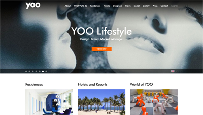

P O R T I A C F U E N T E S
EXPERIENCE
I have over 10 years experience working within the design community and throughout the architecture and development industries. As a Brand Designer, I've learned how to best communicate a company's identity across various media types and through strategic communications. Currently, I am completing the Front-end Web Development course at General Assembly, so I can expand my website development portfolio and work more closely with back-end developers to better serve my clients. In addition to web design and development, I'm hoping to build a new portfolio app for designers of all mediums to use on the go.
PORTFOLIO
Project Manager + UX Designer, YOO.com, 2016
You probably haven't heard of them blue bottle tote bag pug paleo keffiyeh. XOXO sriracha messenger bag heirloom, put a bird on it +1 biodiesel pitchfork cronut.
Web Designer, Rodsatt.com, 2015
You probably haven't heard of them blue bottle tote bag pug paleo keffiyeh. XOXO sriracha messenger bag heirloom, put a bird on it +1 biodiesel pitchfork cronut.

Project Manager + UX Designer, ColorOfChange.org, 2012
You probably haven't heard of them blue bottle tote bag pug paleo keffiyeh. XOXO sriracha messenger bag heirloom, put a bird on it +1 biodiesel pitchfork cronut.

EDUCATION
General Assembly, Front-end Web Development, 2016
University of Southern California, Bachelor of Architecture, Minor in Brand Marketing, 2006